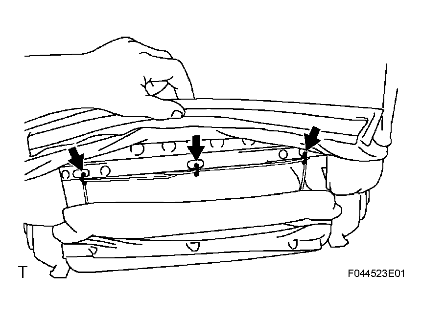
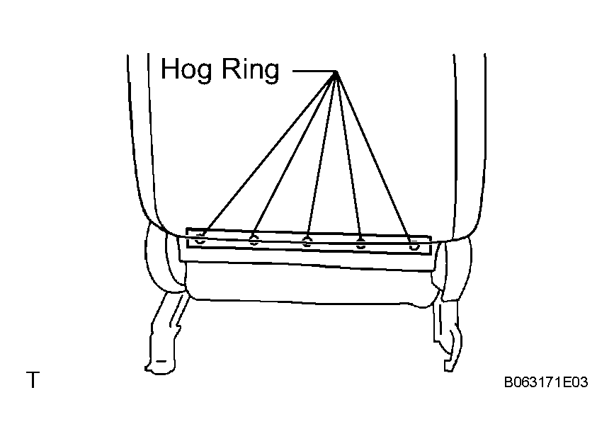

Reassembly (2005/07-2005/12)
HINT:
- Use the same procedures for the RH side and LH side.
- The procedures listed below are for the LH side.
- A bolt without a torque specification is shown in the standard bolt chart (see SPECIFIED TORQUE FOR STANDARD BOLTS ).
CAUTION:
Wear protective gloves. Sharp surfaces on the seatback spring and seat adjuster may injure your hands.
- INSTALL SEAT POSITION AIRBAG SENSOR (See INSTALLATION )
- INSTALL RECLINING ADJUSTER INSIDE COVER LH
- Install the inside cover with the screw.
- INSTALL RECLINING ADJUSTER INSIDE COVER RH
- Install the inside cover with the screw.
- INSTALL FRONT SEAT CUSHION COVER NOTE:
- Be careful not to damage the cover.
- When installing the hog rings, avoid wrinkling the cover.
- Using hog ring pliers, install the seat cushion cover to the seat cushion pad with new hog rings.
- Attach the hook and claw of the front part of the seat adjuster to install the seat cushion cover (with pad).
- Using hog ring pliers, install new hog rings.
- INSTALL FRONT SEATBACK COVER NOTE:
- Be careful not to damage the cover.
- When installing the hog rings, avoid wrinkling the cover.
- Using hog ring pliers, install the seatback cover to the seatback pad with new hog rings.
- Using hog ring pliers, install the seatback cover (with pad) to the seatback frame with new hog rings.
- Attach the 4 claws and install the 2 headrest supports.
- w/Seat hook: Install the seatback hook with the screw.
- INSTALL FRONT SEATBACK ASSEMBLY
- Install the seatback with the 4 bolts.
- Connect the clamps.
- Fold back the seatback cover. Then using hog ring pliers, install the seat cushion cover to the seat cushion pad with new hog rings.

Courtesy of © TOYOTA, LICENSE AGREEMENT TMS1002NOTE:- Be careful not to damage the cover.
- When installing the hog rings, avoid wrinkling the cover.
- Using hog ring pliers, install new hog rings.

Courtesy of © TOYOTA, LICENSE AGREEMENT TMS1002NOTE:- Be careful not to damage the cover.
- When installing the hog rings, avoid wrinkling the cover.
- INSTALL FRONT SEAT CUSHION SHIELD LH
- Attach the 2 claws to install the seat cushion shield.
- Install the 2 screws.
- INSTALL RECLINING ADJUSTER RELEASE HANDLE LH
- Attach the claw to install the release handle.
- REMOVE FRONT SEAT CUSHION SHIELD INNER LH
- Attach the claw to install the seat cushion shield.
- Install the clip and screw.
- INSTALL FRONT SEAT INNER BELT ASSEMBLY LH
- Install the inner belt with the bolt.
Torque: 42 N*m (428 kgf*cm, 31 ft.*lbf)
- Install the inner belt with the bolt.
- INSTALL FRONT SEAT HEADREST ASSEMBLY